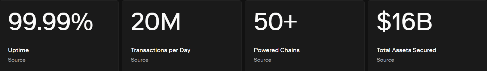

①
Choose your action (swap vs LP)
Swaps exchange tokens. Liquidity provision (LP) earns fees but adds risk like impermanent loss and range management.

This is a practical, safety-first guide to Optimism DEX in 2026: how decentralized exchanges on OP Mainnet work, how to get the best execution, what you really pay in fees (gas + pool fee + slippage), which pairs trade most (WETH/USDC, WETH/OP, USDC/OP, USDC/USDT, USDC/DAI, WETH/WBTC), and the key risks: fake tokens, approvals, MEV, and impermanent loss if you provide liquidity.
Swaps exchange tokens. Liquidity provision (LP) earns fees but adds risk like impermanent loss and range management.
Most best execution routes go through WETH or USDC pools with the deepest liquidity.
Use limited approvals. Revoke allowances when done, especially after LP or vault interactions.
The OP explorer is the source of truth for swaps, mints, burns, and LP position NFTs (if applicable).
An Optimism DEX is a decentralized exchange running on OP Mainnet. It lets users swap tokens peer-to-pool (AMM) without a centralized order book. DEX users typically care about execution quality (price impact), fees, and operational safety (token authenticity, approvals, phishing).
Trading and DeFi actions on OP Mainnet with lower costs than L1 and broad token access.
Thin tokens can have high slippage and MEV risk. LP adds impermanent loss and strategy complexity.

Total cost = OP gas + pool fee + slippage/price impact. For LP, add opportunity cost and impermanent loss risk.
| Cost line | Where it appears | How to reduce it (realistic) |
|---|---|---|
| OP Mainnet gas | Swaps, approvals, LP mint/burn | Batch actions; avoid repetitive approvals |
| Pool fee | DEX fee tier | Compare fee tiers; pick deep liquidity |
| Slippage / price impact | Trade size vs liquidity depth | Split trades; route through WETH/USDC hubs |
| MEV risk | Bad execution on volatile pairs | Avoid extreme slippage; prefer deep pools |
Most swaps and LP actions confirm quickly on OP Mainnet. If something looks stuck, confirm transaction status on the explorer.
| Action | Typical expectation | Reality | Best practice |
|---|---|---|---|
| Swap | Fast | Usually quick; may revert if slippage tight | Set sane slippage; use deep pools |
| Approve token | One time | Often repeated due to poor hygiene | Use limited approvals; revoke later |
| Add/remove liquidity | Simple | Can be multi-step + range choices | Plan ranges; understand exit path |
These pairs are commonly used as “liquidity hubs” and high-volume routes on OP Mainnet. If a direct pair is thin, routers often go through WETH or USDC.
| Pair | Why it’s popular | Execution note |
|---|---|---|
| WETH ↔ USDC | Main price discovery + deepest routing hub | Often best for large trades |
| WETH ↔ OP | Ecosystem exposure | Verify OP token contract |
| USDC ↔ OP | Stable-to-OP entry/exit | Often efficient for smaller size |
| USDC ↔ USDT | Stable rotation | Compare fee tiers and pool depth |
| USDC ↔ DAI | Stable diversification | Check correct stable contract |
| WETH ↔ WBTC | ETH/BTC exposure trading | Prefer deep pools to reduce slippage |
| USDC ↔ WBTC | Stable-to-BTC route | May route through WETH depending on liquidity |
Providing liquidity (LP) can earn fees, but it’s not “free yield.” The main risks are impermanent loss, wrong range settings (concentrated liquidity), and approvals / contract risk.
Keep this block clean and authoritative (official network info + explorer + approval safety). Use these to verify OP Mainnet settings, contracts, and token approvals.
An Optimism DEX is a decentralized exchange on OP Mainnet that lets you swap tokens using AMM liquidity pools. You pay gas + pool fees + slippage, and you must verify token contracts to stay safe.
Common high-usage pairs include WETH↔USDC, WETH↔OP, USDC↔OP, USDC↔USDT, USDC↔DAI, and majors like WETH↔WBTC.
It can be, but it’s not risk-free. LPs face impermanent loss, smart contract risk, and (for concentrated liquidity) range management risk. Start small and choose pairs you understand.
Most common causes are slippage too tight, thin liquidity, wrong network selected, or insufficient gas. Check the tx hash on the OP explorer to see the revert reason.
Bookmark trusted URLs, verify token contracts on the explorer, limit approvals, use an interaction wallet, avoid extreme slippage, and verify every action with tx hashes.
If you’re using concentrated liquidity, the price may be outside your range. Low pool volume or high competing liquidity can also reduce fee income. Check position status in the DEX UI and verify on-chain state.
Often yes. Many best routes go through USDC or WETH because they have deep liquidity. Always compare “min received” and price impact rather than focusing on hop count.